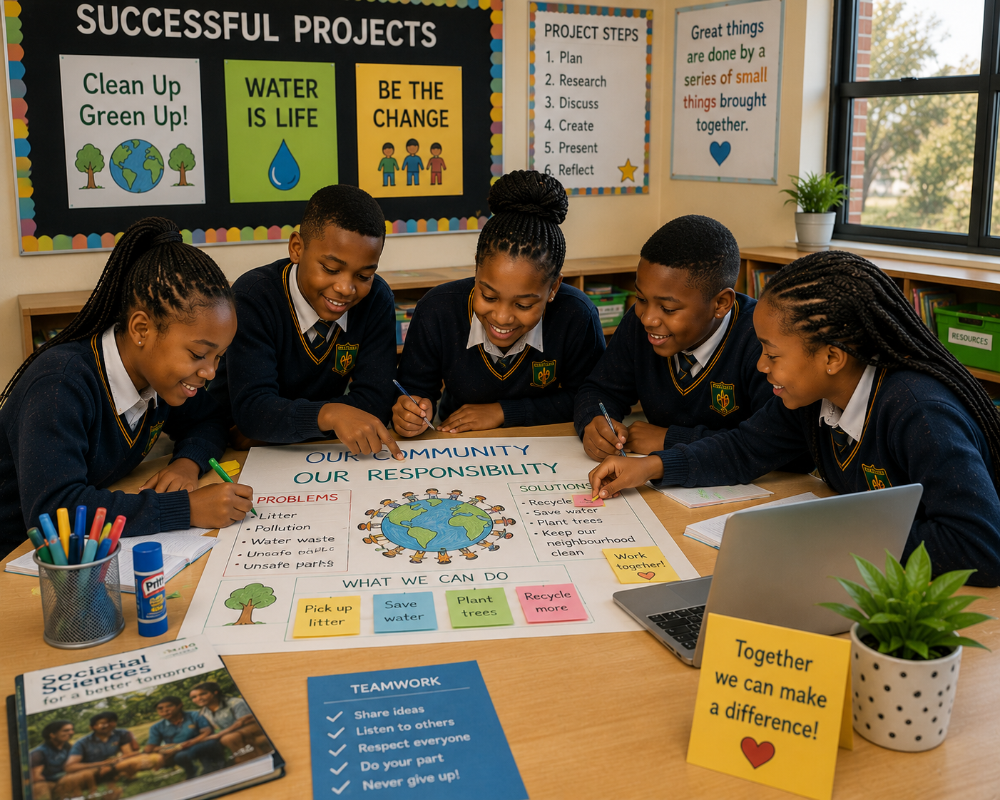
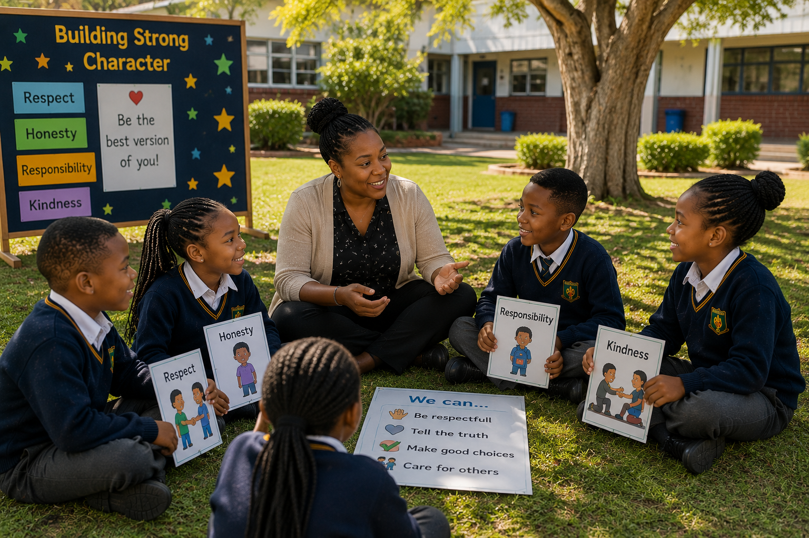
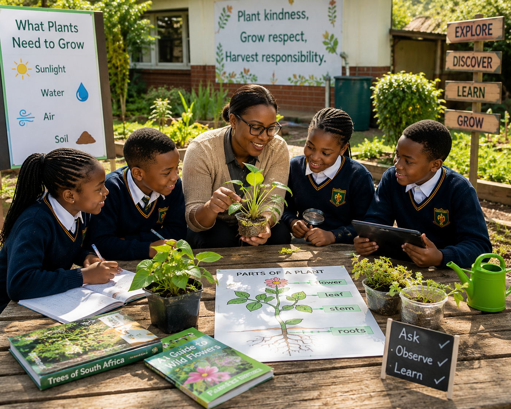

Our Mission
Our mission at Voorpos Primary School is to create a safe, inclusive, and inspiring learning environment where every learner is empowered to reach their full potential. We are committed to delivering high-quality education through dedicated teaching, innovative learning strategies, and strong community partnerships. By fostering discipline, integrity, leadership, and respect, we aim to develop confident individuals prepared to contribute positively to society and succeed in an ever-changing world.

Academic Excellence
Challenging learners to achieve their personal best through quality teaching and a love for learning.
Sports & Physical Development
Building strong, healthy bodies and teamwork skills through diverse sports and physical activities.
Learner Support
A caring and supportive environment that nurtures every learner's well-being and individual growth.
Our Vision
Our vision at Voorpos Primary School is to provide a supportive and inclusive learning environment where every learner is encouraged to grow academically, socially, and personally. We aim to nurture curious minds, confident learners, and responsible citizens who are prepared to face the future with knowledge and strong values. Through meaningful learning experiences, positive relationships, and community involvement, we strive to help our learners develop the skills and character needed to contribute positively to society.



Building Strong Character
Inspiring honesty, integrity, respect and responsibility so that every learner becomes a compassionate and ethical future leader.


Growing Confident Learners
Empowering learners to become confident, curious, independent thinkers who embrace challenges with courage.
Caring School Community
Building a welcoming community where learners, parents and educators work together to help every child succeed.
School at a Glance
Discover what makes Voorpos Primary School a place where learners thrive academically, socially and personally through quality education, dedicated educators and enriching opportunities.
0
Learners
A vibrant community of learners growing every year.
0
Subjects
Providing a balanced and engaging curriculum.
0
Sports Codes
Developing teamwork, discipline and healthy lifestyles.
0
Teachers
Experienced educators inspiring every learner.
0
Commitment
Dedicated to excellence in everything we do.
0
Activities
Creative opportunities beyond the classroom.
Latest News
Stay up to date with the latest news, announcements, and events from our school.
👉 Follow us on our official Facebook page for real-time updates:
We regularly post important announcements, events, and school activities on our social media platforms.